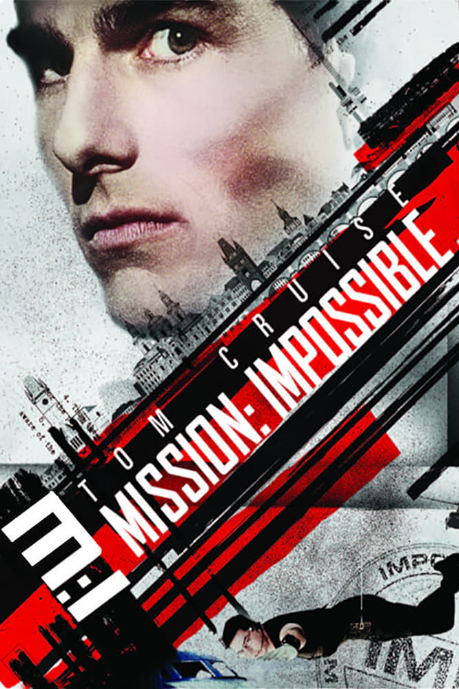
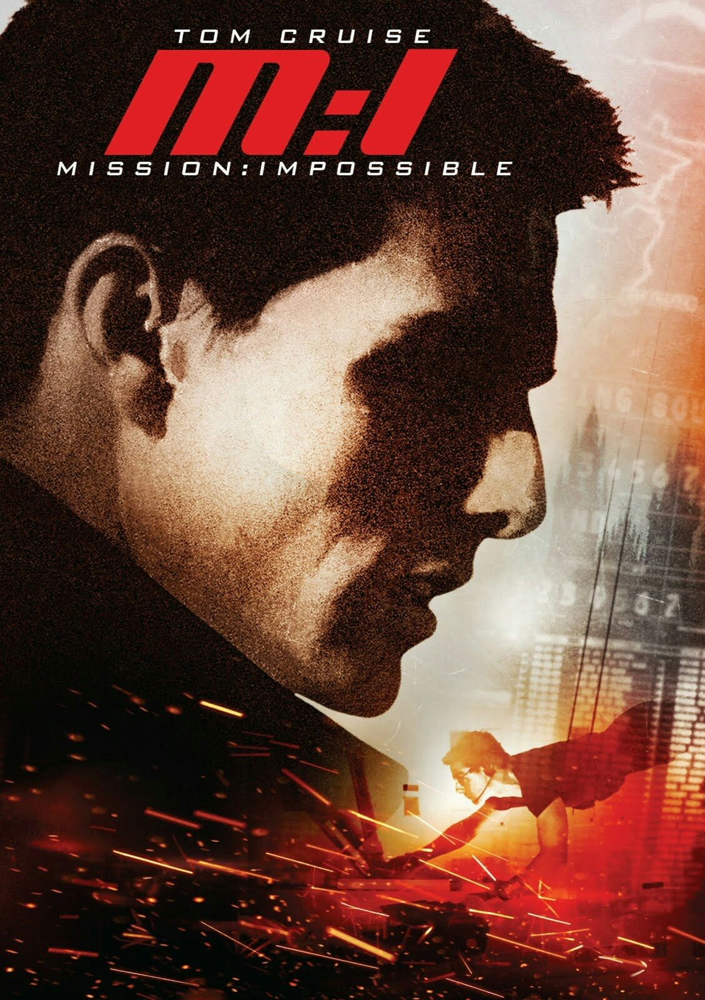
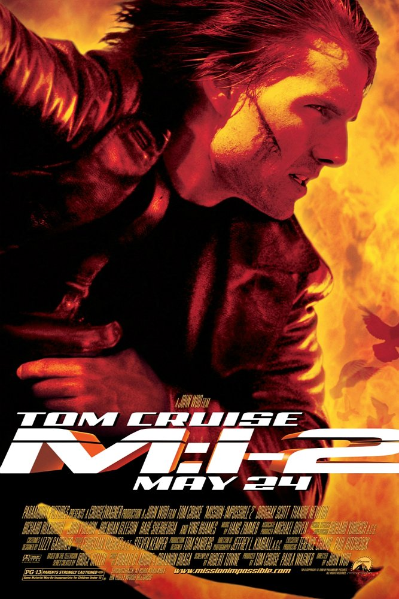
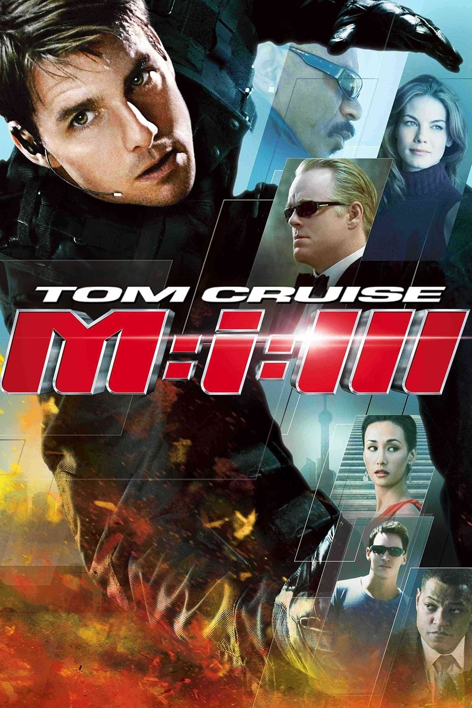
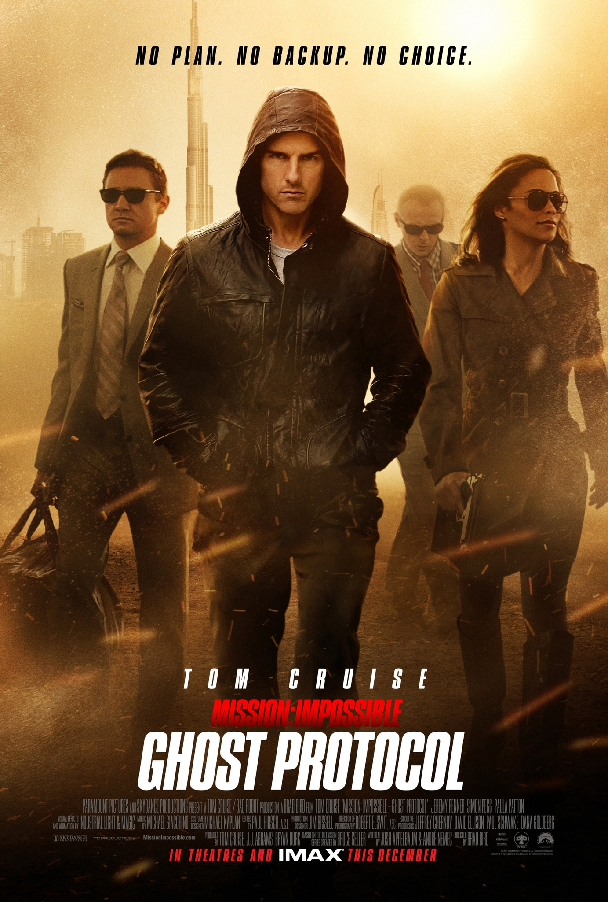
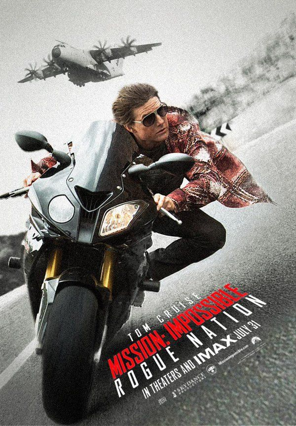
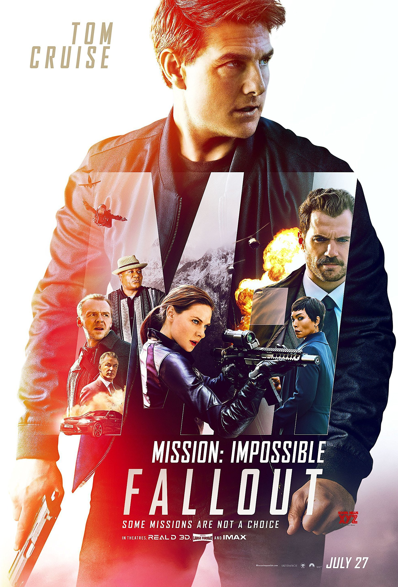
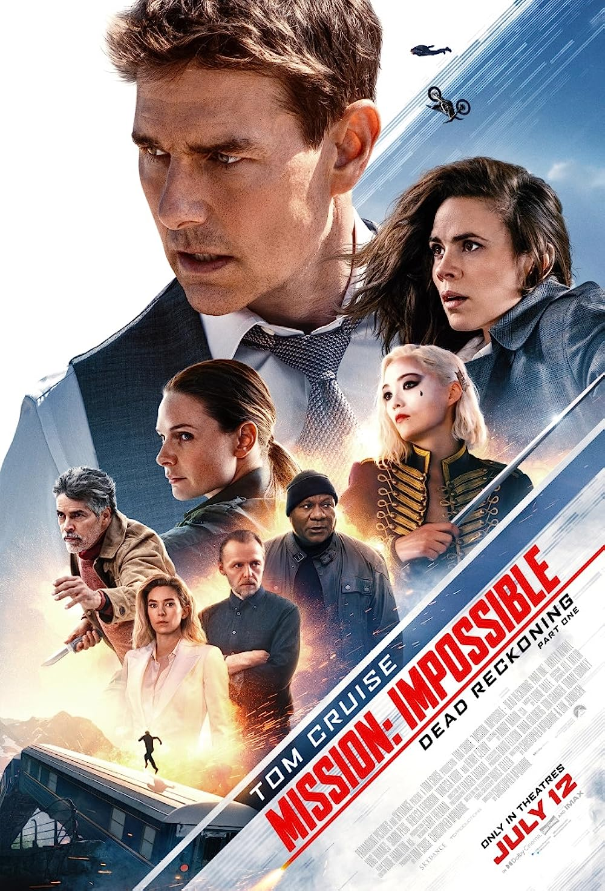

|  |
Mission: Impossible is a series of American action spy films, based on the 1966 TV series created by Bruce Geller. The series is mainly produced by and stars Tom Cruise, who plays Ethan Hunt, an agent of the Impossible Missions Force (IMF). The films have been directed, written, and scored by various filmmakers and crew, while incorporating musical themes from the original series by Lalo Schifrin. Starting in 1996, the films (taking place starting six years after the events of the previous TV sequel series) follow the missions of the IMF's main field team, under Hunt's leadership, to stop an enemy force and prevent an impending global disaster. The series focuses on Hunt's character, and like with the television series' structure, is complemented by an ensemble cast, such as Luther Stickell played by Ving Rhames and Benji Dunn played by Simon Pegg, who have recurring roles. The series has been positively received from critics and audiences. It is the 17th-highest-grossing film series of all time, earning over $4.09 billion worldwide, and is often cited as one of the best action franchises to date. The sixth film, titled Fallout, was released on July 27, 2018 and is currently the series' highest-grossing entry. The seventh and eighth films are two feature-length parts titled Dead Reckoning; Part One was released in July 2023 and Part Two is scheduled to be released in June 2024. The films are co-produced and released by Paramount Pictures.
SHORTCUT TO:- |
Mission Impossible Official Soundtrack
MISSION IMPOSSIBLE 1 |
Mission: Impossible is a 1996 American action spy film directed by Brian De Palma and produced by and starring Tom Cruise from a screenplay by David Koepp and Robert Towne and story by Koepp and Steven Zaillian. A continuation of the 1966 television series of the same name and its 1988 sequel series (canonically set six years after the latter), it is the first installment in the Mission: Impossible film series. It also stars Jon Voight, Henry Czerny, Emmanuelle Béart, Jean Reno, Ving Rhames, Kristin Scott Thomas, and Vanessa Redgrave. In the film, Ethan Hunt (Cruise) seeks to uncover who framed him for the murders of most of his Impossible Missions Force (IMF) team. Numerous efforts by Paramount Pictures to create a film adaptation of the television series stalled until Cruise founded Cruise/Wagner Productions and decided on Mission: Impossible as its inaugural project. Development initially began with filmmaker Sydney Pollack but most of the final screenplay was completed after De Palma, Steven Zaillian, David Koepp and Robert Towne were hired De Palma also designed most of the action sequences, while Cruise did most of his own stunts. Principal photography began in March 1995 and lasted until that August, with filming locations including London, Pinewood Studios in England, and Prague a rarity in Hollywood at the time. |
MISSION IMPOSSIBLE 2 |
Mission: Impossible 2 titled onscreen as Mission: Impossible II and abbreviated as M:i-2 is a 2000 action spy film directed by John Woo and produced by and starring Tom Cruise. It is the sequel to Mission: Impossible (1996) and the second installment in the Mission: Impossible film series. The film also stars Dougray Scott, Thandiwe Newton, Richard Roxburgh, John Polson, Brendan Gleeson, Rade Šerbedžija and Ving Rhames. In the film, Ethan Hunt (Cruise) teams with professional thief Nyah Nordoff-Hall (Newton) to find but not destroy a genetically modified disease held by rogue Impossible Missions Force (IMF) agent Sean Ambrose (Scott), who is Nordoff-Hall's former lover. Mission: Impossible 2 was theatrically released in the United States by Paramount Pictures on May 24, 2000, and grossed $546 million worldwide, becoming the highest-grossing film of that year. Initial reaction from critics was mixed, with praise for the action sequences and Woo's direction, but criticism for the characterization, deeming the film inferior to the first film. A sequel, Mission: Impossible III, was released in 2006. |
MISSION IMPOSSIBLE 3 |
Mission: Impossible III abbreviated as M:i:III is a 2006 American action spy film directed by J. J. Abrams in his directorial debut and produced by, and starring, Tom Cruise, from a screenplay by Abrams, Alex Kurtzman and Roberto Orci. It is the sequel to Mission: Impossible (1996) and Mission: Impossible 2 (2000) and the third installment in the Mission: Impossible film series. It also stars Philip Seymour Hoffman, Ving Rhames, Michelle Monaghan, Billy Crudup, Jonathan Rhys Meyers, Keri Russell, Maggie Q and Laurence Fishburne. In Mission: Impossible III, retired Impossible Missions Force (IMF) agent and trainer Ethan Hunt (Cruise) is forced to return to active duty to capture elusive arms dealer Owen Davian (Hoffman). Development for a third Mission: Impossible film began in 2002, with David Fincher slated to direct he and his eventual replacement Joe Carnahan both departed by 2004, both citing creative differences. Abrams was hired months later at the behest of Cruise, who was a fan of Abrams' Alias (2001–2006), but this further delayed production on the film due to Abrams' contractual obligations for Alias and Lost (2004–2010), and caused prospective cast additions Kenneth Branagh, Carrie-Anne Moss and Scarlett Johansson to depart the film. Principal photography began in July 2005 and lasted until that October, with filming locations including Shanghai, Berlin, Rome, Los Angeles and the Vatican City. |
MISSION IMPOSSIBLE 4 |
Mission: Impossible – Ghost Protocol is a 2011 American action spy film directed by Brad Bird (in his live-action debut) and produced by and starring Tom Cruise from a screenplay by Josh Appelbaum and André Nemec. It is the sequel to Mission: Impossible III (2006) and is the fourth installment in the Mission: Impossible film series. It also stars Jeremy Renner, Simon Pegg, and Paula Patton. In the film, the Impossible Missions Force (IMF) is shut down after being publicly implicated in a bombing of the Kremlin, causing Ethan Hunt (Cruise) and his team to go without resources or backup in a life-threatening effort to clear their names. Development for Mission: Impossible – Ghost Protocol began in August 2009, when Appelbaum and Nemec were hired to write the screenplay (which contained rewrites by eventual series director and writer Christopher McQuarrie). Cruise's return was confirmed by March 2010 after Bird was announced to replace J. J. Abrams, who directed the predecessor. The film was officially titled in October 2010, after which, principal photography took place and lasted until March 2011, with filming locations including Bangalore, Mumbai, Budapest, Moscow, Dubai, and Canadian Motion Picture Park Studios in Vancouver. Like previous entries in the franchise, the cast completed most of their own stunts, while parts of the film were shot in IMAX. |
MISSION IMPOSSIBLE 5 |
Mission: Impossible – Rogue Nation is a 2015 American action spy film written and directed by Christopher McQuarrie from a story by McQuarrie and Drew Pearce. It is the sequel to Mission: Impossible – Ghost Protocol (2011) and the fifth installment in the Mission: Impossible film series. It stars Tom Cruise in the main role, Jeremy Renner, Simon Pegg, Ving Rhames, Rebecca Ferguson, Sean Harris and Alec Baldwin. It follows Impossible Missions Force agent Ethan Hunt (Cruise) and his team, who, subsequent to their disbandment and Hunt's pursuit by the Central Intelligence Agency, must surreptitiously fight The Syndicate, an international black ops terrorist group of rogue government agents from around the world. McQuarrie, who completed uncredited rewrites for Mission: Impossible – Ghost Protocol, was announced as the director of Mission: Impossible – Rogue Nation in August 2013. The returns of Cruise, Renner, Pegg and Rhames were confirmed by July 2014 while the screenplay was also developed by Pearce and Will Staples; it was ultimately solely credited to McQuarrie. Ferguson, Harris and Baldwin rounded out the cast that October. Principal photography was from August 2014 to March 2015, in locations including Vienna, Casablanca, London, and at Leavesden Studios in Hertfordshire. The film's official title was revealed in March 2015. |
MISSION IMPOSSIBLE 6 |
Mission: Impossible – Fallout is a 2018 American action spy film written and directed by Christopher McQuarrie. It is the sequel to Mission: Impossible – Rogue Nation (2015) and is the sixth installment in the Mission: Impossible film series. The film stars Tom Cruise as Ethan Hunt, with a supporting cast of Ving Rhames, Simon Pegg, Rebecca Ferguson, Henry Cavill, Angela Bassett, Sean Harris, Michelle Monaghan, and Alec Baldwin. In Mission: Impossible – Fallout, Ethan Hunt (Cruise) and his Impossible Missions Force (IMF) team seek to prevent nuclear weapon technology from reaching the Apostles, a bioterrorist offshoot of the Syndicate. Talks for a sixth Mission: Impossible film began before the release of its predecessor in 2015. Mission: Impossible – Fallout was officially announced in November 2015, with McQuarrie confirmed to write and direct, thus becoming the first director to return to the franchise. The returns of the cast were announced soon after; Jeremy Renner, who appeared in the previous two films, confirmed his absence at CinemaCon in March 2017, due to scheduling conflicts with Avengers: Endgame (2019). Principal photography began in April 2017 and lasted until March 2018, with filming locations including Paris, New Zealand, London, Norway, and the United Arab Emirates. Production was notably put on hold for seven weeks following an injury to Cruise in August 2017. |
MISSION IMPOSSIBLE 7 |
Mission: Impossible – Dead Reckoning Part One is a 2023 American spy action film directed by Christopher McQuarrie, from a screenplay he co-wrote with Erik Jendresen. It is the sequel to Mission: Impossible – Fallout (2018) and the seventh installment in the Mission: Impossible film series. It stars Tom Cruise as Ethan Hunt, alongside an ensemble cast including Hayley Atwell, Ving Rhames, Simon Pegg, Rebecca Ferguson, Vanessa Kirby, Esai Morales, Pom Klementieff, Mariela Garriga, and Henry Czerny. In the film, Hunt and his IMF team face off against "the Entity", a powerful rogue AI, and fight to prevent it from falling into the wrong hands. In January 2019, Cruise announced that the seventh and eighth Mission: Impossible films would be shot back-to-back, with McQuarrie writing and directing both. Returning and new cast members were announced soon after, and Lorne Balfe, who composed the score for Fallout, returned to score. Filming began in Italy in February 2020 but was halted due to the COVID-19 pandemic. It resumed later that year and wrapped in September 2021, with other filming locations including Norway, the United Kingdom, and the United Arab Emirates. It is the first film in the series since Mission: Impossible 2 (2000) not to involve J. J. Abrams and is the first film in the series to not be produced by Abrams' Bad Robot Productions since Mission: Impossible III (2006). With an estimated budget of $291 million, it is one of the most expensive films ever made, and the most expensive in the franchise. |
| MISSION IMPOSSIBLE 1 TRAILER | MISSION IMPOSSIBLE 2 TRAILER | MISSION IMPOSSIBLE 3 TRAILER |
| MISSION IMPOSSIBLE 4 TRAILER | MISSION IMPOSSIBLE 5 TRAILER | MISSION IMPOSSIBLE 6 TRAILER |
| MISSION IMPOSSIBLE 7 |